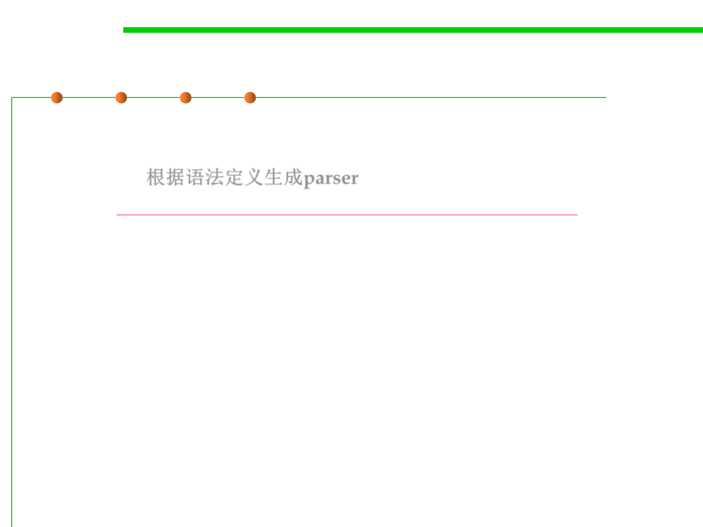

Parser Generator
6.3 Maintainability-Oriented Construction Techniques
▪ A parser generator is a tool that reads a grammar specification and
converts it to a Java program that can recognize matches to the
grammar. 根据语法定义生成parser
– Read http://web.mit.edu/6.031/www/sp17/classes/18-parsers
This is not the mandatory contents of this course.
▪ More broadly:
– A parser generator is a programming tool that creates a parser, interpreter,
or compiler from some form of formal description of a language.
– The input may be a text file containing the grammar written in BNF or
EBNF that defines the syntax of a programming language.
– The output is some source code of the parser for the grammar.